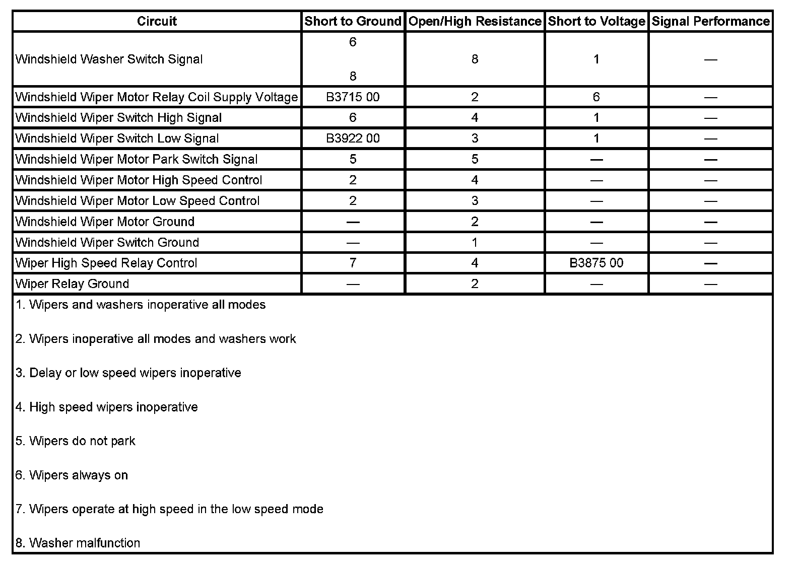
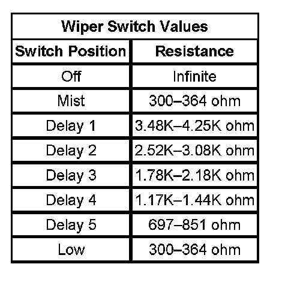

Windshield Wiper Washer System Malfunction
WINDSHIELD WIPER WASHER SYSTEM MALFUNCTION
DIAGNOSTIC FAULT INFORMATION

Perform the Diagnostic System Check - Vehicle prior to using this diagnostic procedure. Initial Inspection and Diagnostic Overview
CIRCUIT/SYSTEM DESCRIPTION
Wiper Mist, Delay 1-5, and Low are all low speed wiper motor functions that are controlled by the body control module (BCM). When the wiper switch is placed in one of the LOW speed wiper modes, ground is applied through the switch contacts a series of internal resistors and the wiper switch low signal circuit to the BCM. In response to this signal, the BCM energizes the WIPER 1 relay by applying battery voltage through the wiper relay control circuit to the coil side of the relay. This allows battery positive voltage from the WPR fuse to flow through the switch input side of the WIPER 1 relay and out to the switch input side of the WIPER 2 relay. Since the wiper high relay is de-energized and its switch contacts are normally closed to the low speed control circuit of the windshield wiper motor, the motor will operate at low speed.
When the wiper switch is placed in the HIGH speed position, ground is applied through the switch contacts and the wiper switch high signal circuit to the BCM indicating the wiper high speed request. The BCM then energizes WIPER 1 relay as stated above and the WIPER 2 relay by applying ground through the control circuit to the coil side of the relay. With the wiper high relay energized and its switch contacts closed to the high speed control circuit of the wiper motor, the motor will operate at high speed.
DIAGNOSTIC AIDS
1. A short to ground in the following circuits will open the WPR fuse:
- Ignition 1 voltage
- Windshield wiper motor relay coil supply voltage
- Windshield wiper switch high signal
- Windshield wiper motor low speed control
- Windshield wiper motor high speed control
2. A short to B+ on any of the wiper/washer switch signal circuits will open the ground trace in the wiper switch.
CIRCUIT/SYSTEM VERIFICATION
BCM And Wiper Switch Verification
1. Ignition ON, observe the scan tool BCM Windshield Wiper Switch parameter. The reading should display Off, Intermittent, Low and High while rotating the wiper switch.
- If one or more of the wiper delay parameters are inoperative and the wiper low speed parameter functions, replace the turn signal/multifunction switch.
- If the low speed and/or high speed parameters are inoperative, perform the Multifunction Switch Circuit/System Testing and/or the Multifunction Switch Component Test.
2. Observe the scan tool BCM Wiper Park Switch parameter. The reading should display Active when the wipers are parked and Inactive with the wipers ON or out of the park position.
- If the Wiper Park Switch parameter is always Active or Inactive, perform the Wipers do not Park Circuit/System Testing.
3. If all wiper position parameters displayed correctly on the scan tool, perform the Wiper Motor Circuit/System Testing and/or the Wiper Motor Component Test
BCM And Wiper Motor Verification
1. Command the windshield wiper motor to the off, low speed and high speed modes with a scan tool. The wipers should perform the commanded state.
- If one or more of the commanded states do not work, perform the Wiper Motor tests in Circuit/System Testing and/or Component test.
2. If all the wiper motor speeds function, perform the Multifunction Switch Circuit/System Testing and/or the Multifunction Switch Component Test.
CIRCUIT/SYSTEM TESTING
Multifunction Switch Circuit/system Testing
1. Ignition OFF, disconnect the C3 harness connector at the turn signal/multifunction switch.
2. Ignition OFF, test for less than 15 ohms of resistance between the ground circuit terminal M and ground.
- If greater than 15 ohms, test the ground circuit for an open/high resistance. If the circuit tests normal, replace the body control module.
3. Verify the scan tool Windshield Wiper Switch parameter is Off.
- If not Off, test the signal circuit terminal N for a short to ground. If the circuit tests normal, replace the body control module.
4. Verify the scan tool Wiper High Speed Switch parameter is Inactive.
- If not Inactive, test the signal circuit terminal K for a short to ground. If the circuit tests normal, replace the body control module.
5. Install a 3-amp fused jumper wire between the signal circuit terminal N and ground. Verify the scan tool Windshield Wiper Switch parameter is Switch Fault.
- If not Switch Fault, test the signal circuit for a short to voltage or an open/high resistance. If the circuit tests normal, replace the body control module.
6. Install a 3-amp fused jumper wire between the signal circuit terminal K and ground. Verify the scan tool Wiper High Speed Switch parameter is Active.
- If not Active, test the signal circuit for a short to voltage or an open/high resistance. If the circuit tests normal, replace the body control module.
7. If all circuits test normal, replace the turn signal/multifunction switch.
Wipers Do Not Park Circuit/system Testing
1. Ignition OFF, disconnect the harness connector at the windshield wiper motor.
2. Ignition ON, verify the scan tool BCM Wiper Park Switch parameter is Inactive.
- If not Inactive, test the signal circuit terminal 3 for a short to ground. If the circuit tests normal, replace the body control module.
3. Install a 3-amp fused jumper wire between the wiper motor park switch signal circuit terminal 3 and ground. Verify the scan tool Wiper Park Switch parameter is Active.
- If not Active, test the signal circuit for an open/high resistance. If the circuit tests normal, replace the body control module.
4. If all circuits test normal, replace the windshield wiper motor.
Wiper Motor Circuit/system Testing
1. Ignition OFF, disconnect the underhood fuse block.
2. IMPORTANT: The underhood fuse block bottom view illustration is an inverted view of the connectors in the bracket assembly.
Test for less that 5 ohms of resistance between the wiper relay ground circuit in connector C2 terminal N5 and ground.
- If greater than 5 ohms, test the ground circuit for an open/high resistance.
3. Connect a 60A fused jumper from the battery supply terminal in connector C6 to the LBEC 2 fuse output circuit 42 in connector C5 terminal F2.
4. Connect a test lamp from the WIPER 1 relay control circuit in connector C5 terminal K3 to ground.
5. Ignition on, command the Wiper Relay ON and OFF with a scan tool. The test lamp should turn ON and OFF when changing between the commanded states.
- If the test lamp is always ON, test the control circuit for a short to voltage. If the circuit tests normal, replace the body control module.
- If the test lamp is always OFF, test the control circuit for a short to ground or an open/high resistance. If the circuit tests normal, replace the body control module.
6. Connect a test lamp from battery voltage to the WIPER 2 relay control circuit in connector C5 terminal K1.
7. Command the Wiper High Speed Relay ON and OFF with a scan tool. The test lamp should turn ON and OFF when changing between the commanded states.
- If the test lamp is always ON, test the control circuit for a short to ground. If the circuit tests normal, replace the body control module.
- If the test lamp is always OFF, test the control circuit for a short to voltage or an open/high resistance. If the circuit tests normal, replace the body control module.
8. Ignition OFF, connect the underhood fuse block.
9. Disconnect the harness connector at the wiper motor.
10. Test for less that 1 ohm of resistance between the wiper motor ground circuit terminal 2 and ground.
- If greater than 1 ohm, test the ground circuit for an open/high resistance.
11. Connect a test lamp between the low speed motor control circuit terminal 1 and ground.
12. Ignition on, command the Wiper Relay ON and OFF with a scan tool. The test lamp should turn ON and OFF when changing between the commanded states.
- If the test lamp is always ON, test the control circuit for a short to voltage. If the circuit tests normal, replace the underhood fuse block.
- If the test lamp is always OFF, test the control circuit for a short to ground or an open/high resistance. If the circuit tests normal, replace the underhood fuse block.
13. Connect a test lamp between the high speed motor control circuit terminal A and ground.
14. Command the Wiper High Speed Relay ON and OFF with a scan tool. The test lamp should turn ON and OFF when changing between the commanded states.
- If the test lamp is always ON, test the control circuit for a short to voltage. If the circuit tests normal, replace the underhood fuse block.
- If the test lamp is always OFF, test the control circuit for a short to ground or an open/high resistance. If the circuit tests normal, replace the underhood fuse block.
15. If all circuits test normal, replace the windshield wiper motor.
COMPONENT TESTING
Multifunction Switch
Wiper Switch Values:

1. Ignition OFF, disconnect the C3 harness connector at the turn signal/multifunction switch.
2. Test the resistance between terminals M and N. Rotate the wiper switch and compare the resistance readings to the values in the Windshield Wiper Switch Values table below for MIST, each DELAY and LOW speed.
- If the resistance is not within the specified range, replace the turn signal/multifunction switch.
3. Test for infinite resistance between terminals M and K while rotating the wiper switch to MIST, each DELAY and LOW speed positions.
- If the less than infinite, replace the turn signal/multifunction switch.
4. Test for less than 5 ohms of resistance with the wiper switch in the High speed position. to.
- If greater than 5 ohm, replace the turn signal/multifunction switch.
5. Test for infinite resistance between terminals M and L while rotating the wiper switch to MIST, each DELAY and LOW speed positions.
- If less than infinite, replace the turn signal/multifunction switch.
6. Test for less than 5 ohm of resistance while pressing the WASHER switch.
- If greater than 5 ohm, replace the turn signal/multifunction switch.
IMPORTANT: If the switch tests open in any switch position other than Off, test the wiper/washer switch signal circuits for a short to voltage before replacing the switch.
Windshield Wiper Motor Dynamic Test
1. Ignition OFF, disconnect the harness connector at the windshield wiper motor.
2. Install a 25-amp fused jumper wire between the control terminal 1 and 12 volts. Install a jumper wire between the ground terminal 5 and ground.
3. The wiper motor should be in low speed mode.
- If the wiper motor is not in the low speed mode replace the motor.
4. Install a 25-amp fused jumper wire between the control terminal 4 and 12 volts. Install a jumper wire between the ground terminal 5 and ground.
5. The wiper motor should be in the high speed mode.
- If the wiper motor is not in the high speed mode replace the motor.
REPAIR INSTRUCTIONS
Perform the Diagnostic Repair Verification after completing the diagnostic procedure.
- Turn Signal Multifunction Switch Replacement
- Wiper Motor Module Replacement
- Underhood Electrical Center or Junction Block Replacement
- Control Module References for BCM replacement, programming, and setup. Verification Tests Programming and Relearning